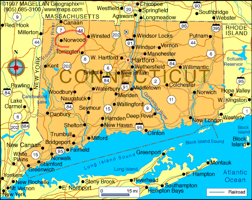

Deep in the woods of Norwood, CT, about an hour west of Hartford, lies the isolated campus of Western Connecticut State University—known to its students as WestConn. The campus is an island of cracked bricks and dim street lamps, in an ocean of trees and narrow, winding roads that seem to stretch on to infinity before daring to touch civilization.
Despite its recent elevation to top-tier research status, WestConn boasts old dilapidated dormitories and classrooms, the most recent of which hasn’t been touched since the ’70s. Walking down the hallways, the floors seem to sag and the lights flicker. Seemingly every building is connected by a series of underground maintenance tunnels that aren’t mentioned on any university brochures, but spark endless discussion in the student body. Knowledge of their existence is passed down—as ancestral knowledge—from upperclassmen to the select few freshmen deemed worthy of the secret.
Only two buildings look new enough to survive a blow from the big bad wolf. The shiny new athletic center, designed to woo the best high school basketball players in the country to sign their souls to WestConn, and the Cumberland Farms at the edge of campus, which is the only hint of the real world for miles. Its premium location allows it to extort students out of the little money WestConn leaves in their pockets. But if you want gas or snacks and alcohol, you’re gonna have to pay a pretty penny to Cumbies. Also, the parking lot out back is the premier location to meet up with your plug.
WestConn’s identity revolves around its women’s basketball program, energy is high this year after three consecutive national championships. This dynasty is led by their sacred leader Snowball IX, a strikingly white Siberian Husky who has served as mascot for the last three years. No one knows why, but the current era of Connecticut basketball dominance started as soon as Snowball IX was dragged to his first game. At this point, Snowball is treated as the god-king of WestConn—almost more powerful than President John Whyteman—constantly paraded around campus, and made to attend press events.
He hates it.
He is unsettled by crowds. Loud noises put him on edge, and he avoids looking directly at cameras. Yet he is forced to attend every game, home and away, because if Snowball is there, the Huskies will win.